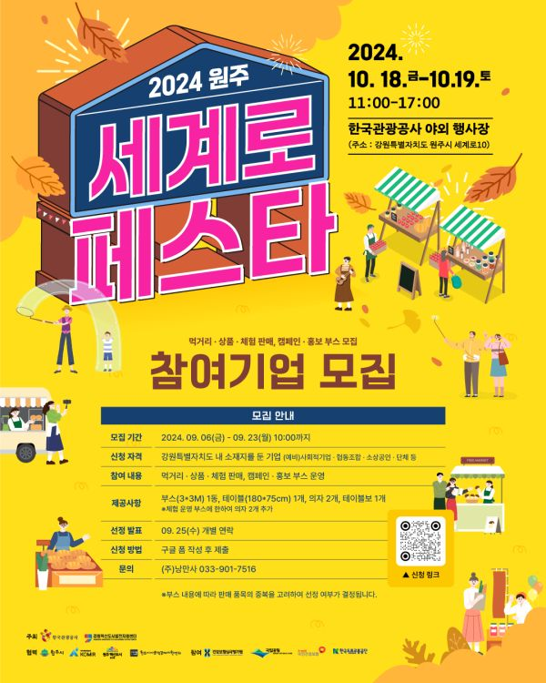

안녕하세요! 올해도 한국관광공사의 <세계로 페스타> 행사가 진행됩니다 ~!
참여 기업 모집 중이니 많은 신청 부탁드려요 :)
- 일시 : 2024. 10. 18. - 19.(금-토) ｜ 11:00-17:00
- 장소 : 한국관광공사 야외 행사장(원주시 세계로10)
- 모집기간 : 2024. 09. 06(금) - 09. 23(월) 10:00까지
- 신청자격 : 강원특별자치도 내 소재지를 둔 기업
- 참여내용 : 먹거리 · 상품 · 체험판매 · 캠페인 · 홍보부스 운영
- 제공사항 : 부스(3*3M) 1동 / 테이블(180*75cm) 1개 / 의자 2개 / 테이블보 1개
- 선정발표 : 2024. 09. 25(수) 개별 연락
- 신청방법 : https://forms.gle/UWbCtxB8jmLdQQUB8